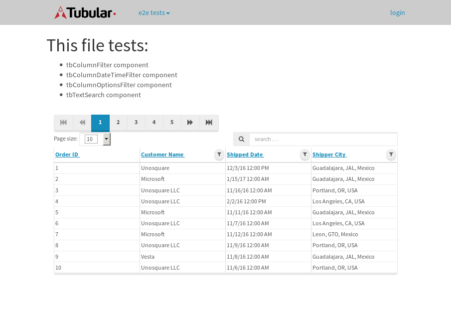
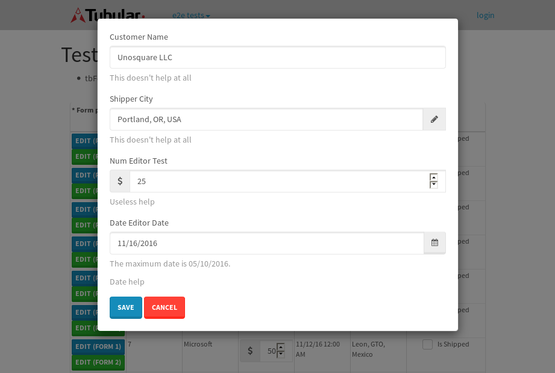
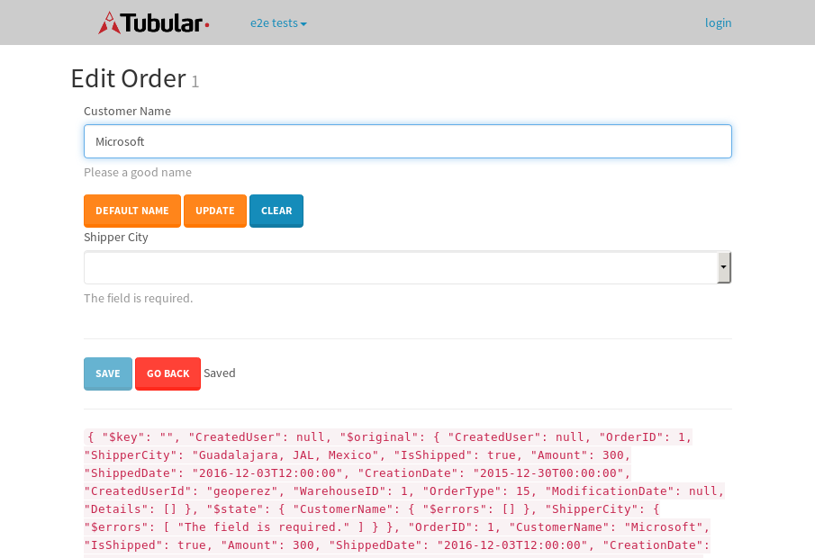

tbColumn.Grid Sorting - 26.142sTests: 5Skipped: 0Failures: 0 should sort data in ascending order then on descending order when sorting by Order Id column - 5.278sTests passed: 100.00%should order data in ascending order when click-sorting an unsorted text column - 4.669sTests passed: 100.00%should order data in descending order when click-sorting an ascending-sorted text column - 5.568sTests passed: 100.00%should order data in ascending order when click-sorting an unsorted date column - 4.831sTests passed: 100.00%should order data in descending order when click-sorting twice an unsorted date column - 5.793sTests passed: 100.00%
tbColumn.Grid Components - 3.302sTests: 3Skipped: 0Failures: 0 should print grid - 1.217s***Skipped***Tests passed: 0%should export grid - 1.055s***Skipped***Tests passed: 0%should show column selector - 1.03sTests passed: 100.00%
tbSingleForm.Form validations - 2.149sTests: 2Skipped: 0Failures: 0 should have an empty required field - 1.272sTests passed: 100.00%should not be able to click on save - 0.877sTests passed: 100.00%
Tubular Filters.tbColumnFilter - 107.257sTests: 12Skipped: 0Failures: 0 should cancel filtering when clicking outside filter-popover - 9.131sTests passed: 100.00%should disable Value text-input for "None" filter - 6.649sTests passed: 100.00%should disable apply button for "None" filter - 6.46sTests passed: 100.00%should decorate popover button when showing data is being filtered for its column - 11.617sTests passed: 100.00%should correctly filter data for the "Equals" filtering option - 7.626sTests passed: 100.00%should correctly filter data for the "Not Equals" filtering option - 7.827sTests passed: 100.00%should correctly filter data for the "Contains" filtering option - 8.807sTests passed: 100.00%should correctly filter data for the "Not Contains" filtering option - 8.111sTests passed: 100.00%should correctly filter data for the "Starts With" filtering option - 7.509sTests passed: 100.00%should correctly filter data for the "Not Starts With" filtering option - 7.756sTests passed: 100.00%should correctly filter data for the "Ends With" filtering option - 7.085sTests passed: 100.00%should correctly filter data for the "Not Ends With" filtering option - 6.848sTests passed: 100.00%
Tubular Filters.tbColumnDateTimeFilter - 133.497sTests: 12Skipped: 0Failures: 0 should cancel filtering when clicking outside filter-popover - 7.515sTests passed: 100.00%should disable Value text-input for "None" filter - 6.406sTests passed: 100.00%should disable apply button for "None" filter - 6.441sTests passed: 100.00%should clear filtering when clicking on Clean button - 17.817sTests passed: 100.00%should decorate popover button when showing data is being filtered for its column - 11.571sTests passed: 100.00%should correctly filter data for the "Equals" filtering option - 6.508sTests passed: 100.00%should correctly filter data for the "Not Equals" filtering option - 6.73sTests passed: 100.00%should correctly filter data for the "Between" filtering option - 11.927sTests passed: 100.00%should correctly filter data for the "Greater-or-equal" filtering option - 12.069sTests passed: 100.00%should corretlly filter data for the "Greater" filtering option - 12.358sTests passed: 100.00%should correctly filter data for the "Less-or-equal" filtering option - 11.681sTests passed: 100.00%should correctly filter data for the "Less" filtering option - 11.661sTests passed: 100.00%
Tubular Filters.tbColumnOptionsFilter - 80.131sTests: 3Skipped: 0Failures: 0 should cancel filtering when clicking outside filter-popover - 8.603sTests passed: 100.00%should decorate popover button when showing data is being filtered for its column - 11.544sTests passed: 100.00%should filter column-elements in accordance to the selected filter when selecting a single option - 48.968sTests passed: 100.00%
Tubular Filters.tbTextSearch - 47.608sTests: 5Skipped: 0Failures: 1 min-chars is not set - 0.824sTests passed: 100.00%should filter data in searchable-column customer name to matching inputted text, starting from 3 characters - 6.773sTests passed: 100.00%should filter data in searchable-column shipper city to matching inputted text, starting from 3 characters - 11.857sTests passed: 100.00%should show clear button when there is inputted text only - 6.363sTests passed: 100.00%should clear filtering when clicking clear button - 16.179sExpected 10 not to be 10.✗Tests passed: 0.00%
tbForm related components.tbCheckboxField - 7.142sTests: 2Skipped: 0Failures: 0 should save changes on "SAVE" - 3.434sTests passed: 100.00%should discard changes on "CANCEL" - 1.709sTests passed: 100.00%
tbForm related components.tbDropDownEditor - 10.914sTests: 5Skipped: 0Failures: 0 should set initial input value to the value of "value" attribute when defined - 1.667sTests passed: 100.00%should show the component name value in a label field when "showLabel" attribute is true - 1.508sTests passed: 100.00%should show a help field equal to this attribute, is present - 1.566sTests passed: 100.00%should submit modifications to item/server when clicking form "Save" - 2.964sTests passed: 100.00%should NOT submit modifications to item/server when clicking form "Cancel" - 2.556sTests passed: 100.00%
tbForm related components.tbTextArea - 14.528sTests: 7Skipped: 0Failures: 0 should set initial input value to the value of "value" attribute when defined - 1.477sTests passed: 100.00%should be invalidated when the number of chars is not in the range of "min" and "max" attributes - 1.96sTests passed: 100.00%should show the component name value in a label field when "showLabel" attribute is true - 1.751sTests passed: 100.00%should show a help field equal to this attribute, is present - 1.469sTests passed: 100.00%should require the field when the attribute "required" is true - 1.711sTests passed: 100.00%should submit modifications to item/server when clicking form "Save" - 2.953sTests passed: 100.00%should NOT submit modifications to item/server when clicking form "Cancel" - 1.928sTests passed: 100.00%
tbForm related components.tbDateEditor - 13.632sTests: 6Skipped: 0Failures: 4 should set initial date value to the value of "value" attribute when defined - 1.761sExpected false to be true.✗Tests passed: 0.00%should be invalidated when the date is not in the range of "min" and "max" attributes - 2.276sExpected false to be true.✗Expected 1 to be less than 1.✗Tests passed: 33.33%should show the component name value in a label field when "showLabel" attribute is true - 1.678sTests passed: 100.00%should show a help field equal to this attribute, is present - 2.084sTests passed: 100.00%should submit modifications to item/server when clicking form "Save" - 2.42sExpected false to be true.✗Tests passed: 0.00%should NOT submit modifications to item/server when clicking form "Cancel" - 2.105sExpected false to be true.✗Tests passed: 0.00%
tbForm related components.tbTypeaheadEditor - 14.57sTests: 7Skipped: 0Failures: 1 should show an options list when there is an API-info/component entered-data - 1.855sTests passed: 100.00%should select the option clicked - 1.956sTests passed: 100.00%should show a "delete" button when an option/match is selected, and delete the option if button is clicked - 2.16sFailed: each key must be a number of string; got boolean✗Tests passed: 50.00%should show a label value equal to the component name when "showLabel" attribue is true - 1.757sTests passed: 100.00%should require a value when "require" attribute is true - 1.804sTests passed: 100.00%should submit modifications to item/server when clicking form "Save" - 2.655sTests passed: 100.00%should NOT submit modifications to item/server when clicking form "Cancel" - 1.699sTests passed: 100.00%
tbForm related components.tbSimpleEditor - 19.88sTests: 9Skipped: 0Failures: 1 should set initial input value to the value of "value" attribute when defined - 1.398sTests passed: 100.00%should be invalidated when the number of chars is not in the range of "min" and "max" attributes - 2.062sTests passed: 100.00%should show the component name value in a label field when "showLabel" attribute is true - 1.726sTests passed: 100.00%should set input placeholder to the value of "placeholder" attribute - 2.208sTests passed: 100.00%should validate the control using the "regex" attribute, if present - 2.228sFailed: each key must be a number of string; got function✗Tests passed: 0.00%should show a help field equal to this attribute, is present - 1.698sTests passed: 100.00%should require the field when the attribute "required" is true - 1.699sTests passed: 100.00%should submit modifications to item/server when clicking form "Save" - 4.201sTests passed: 100.00%should NOT submit modifications to item/server when clicking form "Cancel" - 1.965sTests passed: 100.00%
tbForm related components.tbNumericEditor - 14.63sTests: 7Skipped: 0Failures: 0 should set initial component value to the value of "value" attribute when defined - 1.488sTests passed: 100.00%should be invalidated when the entered number is not in the range of "min" and "max" attributes - 2.109sTests passed: 100.00%should show the component name value in a label field when "showLabel" attribute is true - 1.604sTests passed: 100.00%should show a help field equal to this attribute, is present - 1.618sTests passed: 100.00%should require the field when the attribute "required" is true - 2.136sTests passed: 100.00%should submit modifications to item/server when clicking form "Save" - 2.974sTests passed: 100.00%should NOT submit modifications to item/server when clicking form "Cancel" - 1.971sTests passed: 100.00%
tbForm Connection Error - 2.759sTests: 1Skipped: 0Failures: 0 tbForm connection error functionality - 0.452sTests passed: 100.00%
tbForm Connection Error - 2.546sTests: 1Skipped: 0Failures: 0 tbForm connection error functionality - 0.349sTests passed: 100.00%
tbForm Connection Error - 2.257sTests: 1Skipped: 0Failures: 1 tbForm connection error functionality - 0.342sExpected '' to equal 'No data found'.✗Tests passed: 0.00%
tb Form Date Editor.tbDateEditor - 17.013sTests: 6Skipped: 0Failures: 0 should set initial date value to the value of "value" attribute when defined - 1.827sTests passed: 100.00%should be invalidated when the date is not in the range of "min" and "max" attributes - 3.758sTests passed: 100.00%should show the component name value in a label field when "showLabel" attribute is true - 1.742sTests passed: 100.00%should show a help field equal to this attribute, is present - 1.629sTests passed: 100.00%should submit modifications to item/server when clicking form "Save" - 2.619sTests passed: 100.00%should NOT submit modifications to item/server when clicking form "Cancel" - 3.526sTests passed: 100.00%
tbGridComponents - 7.843sTests: 6Skipped: 0Failures: 0 should add item with newRow method - 1.73sTests passed: 100.00%should add item with newRow method and cancel action - 0.578sTests passed: 100.00%should update item with tbSaveButton - 1.227sTests passed: 100.00%should update item with tbSaveButton and cancel action - 0.832sTests passed: 100.00%should remove item with tbRemoveButton - 1.105sTests passed: 100.00%should remove item with tbRemoveButton and cancel action - 0.816sTests passed: 100.00%
tbGridPager.navigation buttons - 7.602sTests: 1Skipped: 0Failures: 0 should perform no action when clicking on the numbered navigation button corresponding to the current-showing results page - 1.171sTests passed: 100.00%
tbGridPager.navigation buttons.first/non-last results page related functionallity - 3.073sTests: 2Skipped: 0Failures: 0 should disable "first" and "previous" navigation buttons when in first results page - 1.276sTests passed: 100.00%should enable "last" and "next" navigation buttons when in a results page other than last - 1.797sTests passed: 100.00%
tbGridPager.navigation buttons.last/non-first results page related functionallity - 3.356sTests: 2Skipped: 0Failures: 0 should disable "last" and "next" navigation buttons when in last results page - 1.527sTests passed: 100.00%should enable "first" and "previous" navigation buttons when in a results page other than first - 1.829sTests passed: 100.00%
tbGridPager.page navigation - 6.491sTests: 5Skipped: 0Failures: 0 should go to next results page when clicking on next navigation button - 1.959sTests passed: 100.00%should go to previous results page when clicking on previous navigation button - 1.309sTests passed: 100.00%should go to last results page when clicking on last navigation button - 1.041sTests passed: 100.00%should go to first results page when clicking on first navigation button - 1.182sTests passed: 100.00%should go to corresponding results page when clicking on a numbered navigation button - 1sTests passed: 100.00%
tbGridPagerInfo - 4.888sTests: 2Skipped: 0Failures: 0 should show text in accordance to numbered of filter rows and current results-page - 1.327sTests passed: 100.00%should show count in footer - 0.442sTests passed: 100.00%
tbHttp - 22.01sTests: 8Skipped: 0Failures: 0 should be authenticated - 2.415sTests passed: 100.00%retrieve data - 3.521sTests passed: 100.00%should not login bad credentials - 2.276sTests passed: 100.00%should have a refresh token - 3.401sTests passed: 100.00%should remove authentication - 2.276sTests passed: 100.00%get method-Is not authenticated - 2.2sTests passed: 100.00%post method-Is not authenticated - 2.426sTests passed: 100.00%should regenerate access token on post - 3.493sTests passed: 100.00%
LocalData.Grid Local Data Sorting - 7.289sTests: 4Skipped: 0Failures: 1 should order data in ascending order when click-sorting an unsorted text column - 1.599sTests passed: 100.00%should order data in descending order when click-sorting an ascending-sorted text column - 1.977sTests passed: 100.00%should correctly filter data for the "Contains" filtering option - 1.737sFailed: Element is not enabled✗Tests passed: 0.00%should correctly filter data for the "Contains" with ENTER key - 1.974sTests passed: 100.00%
OData.Grid OData Sorting - 30.435sTests: 7Skipped: 0Failures: 1 should order data in ascending order when click-sorting an unsorted numeric column - 5.212sTests passed: 100.00%should order data in descending order when click-sorting an ascending-sorted numeric column - 4.186sTests passed: 100.00%should order data in ascending order when click-sorting an unsorted text column - 2.829sTests passed: 100.00%should order data in descending order when click-sorting an ascending-sorted text column - 3.944sTests passed: 100.00%should order data in ascending order when click-sorting an unsorted date column - 5.31sTests passed: 100.00%should order data in descending order when click-sorting an ascending-sorted date column - 6.204sTests passed: 100.00%should correctly filter data for the "Contains" filtering option - 2.745sFailed: Element is not enabled✗Tests passed: 0.00%
tbPageSizeSelctor - 15.588sTests: 4Skipped: 0Failures: 0 should filter up to 10 data rows per page when selecting a page size of "10" - 2.68sTests passed: 100.00%should filter up to 20 data rows per page when selecting a page size of "20" - 2.059sTests passed: 100.00%should filter up to 50 data rows per page when selecting a page size of "50" - 4.249sTests passed: 100.00%should filter up to 100 data rows per page when selecting a page size of "100" - 3.349sTests passed: 100.00%
tbRowSelectable - 14.132sTests: 2Skipped: 0Failures: 0 selected rows - 7.181sTests passed: 100.00%unselected rows - 4.146sTests passed: 100.00%
tbSingleForm.Form fields - 14.439sTests: 7Skipped: 0Failures: 1 should load correct info - 1.007sTests passed: 100.00%should change customer name - 0.945sTests passed: 100.00%should save it - 3.586sFailed: Element is not enabled✗Tests passed: 0.00%should clear the inputs - 1.115sTests passed: 100.00%should update - 2.366sTests passed: 100.00%should reset editor - 2.65sTests passed: 100.00%should not save if not Changes - 2.769sTests passed: 100.00%
tbSingleForm.Form validations - 1.98sTests: 2Skipped: 0Failures: 0 should load correct info - 0.854sTests passed: 100.00%should not be able to click on save - 1.126sTests passed: 100.00%
tubularTemplateServiceModule.#createColumns() - 1.598sTests: 2Skipped: 0Failures: 0 should return an array with 7 elements - 0.731sTests passed: 100.00%first element should match - 0.867sTests passed: 100.00%
tubularTemplateServiceModule.#generateFieldsArray() - 1.472sTests: 2Skipped: 0Failures: 0 should return an array with 7 elements - 0.757sTests passed: 100.00%first element should match - 0.715sTests passed: 100.00%
tubularTemplateServiceModule.#generatePopup() - 0.733sTests: 1Skipped: 0Failures: 0 should html match - 0.733sTests passed: 100.00%
tubularTemplateServiceModule.#getEditorTypeByDateType() - 3.25sTests: 4Skipped: 0Failures: 0 should be tbDateTimeEditor - 0.831sTests passed: 100.00%should be tbNumericEditor - 0.714sTests passed: 100.00%should be tbCheckboxField - 0.835sTests passed: 100.00%should be tbSimpleEditor - 0.87sTests passed: 100.00%
tubularTemplateServiceModule.#generateForm() - 2.935sTests: 3Skipped: 0Failures: 0 should single layout html match - 0.823sTests passed: 100.00%should two columns layout html match - 1.327sTests passed: 100.00%should three columns layout html match - 0.785sTests passed: 100.00%
tubularTemplateServiceModule.#generateCells() - 2.135sTests: 1Skipped: 0Failures: 0 should html match - 2.135sTests passed: 100.00%
tubularTemplateServiceModule.#generateGrid() - 0.744sTests: 1Skipped: 0Failures: 0 should html match - 0.742sTests passed: 100.00%


{kind=link}
{kind=link}
{kind=link}